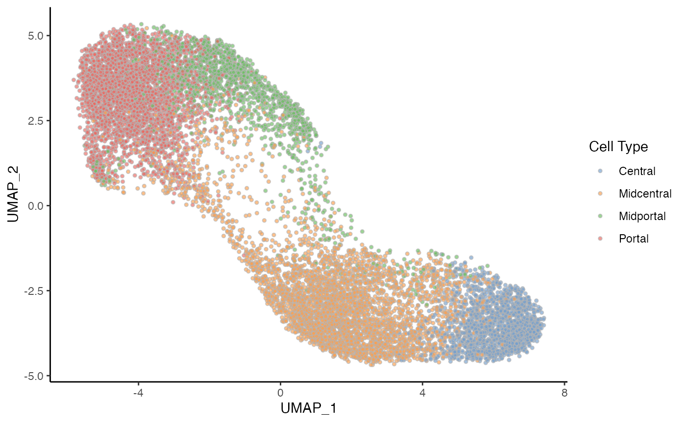
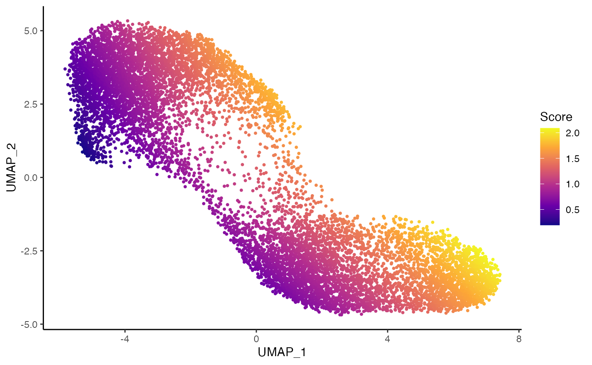
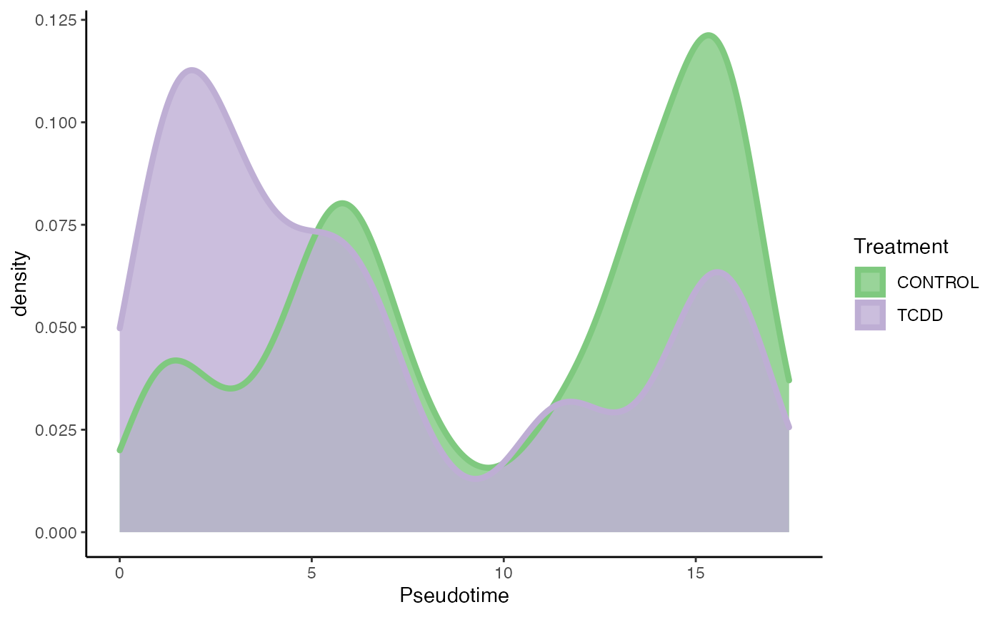
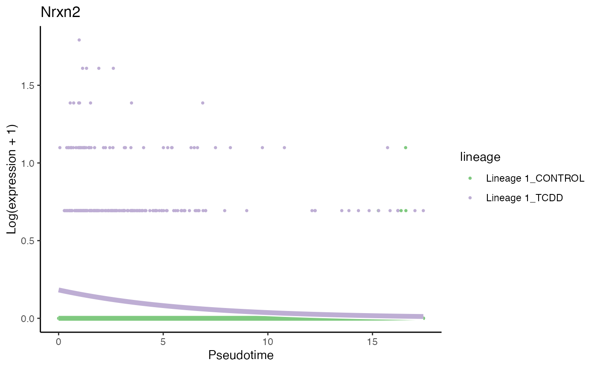

Analysis of the TCDD datataset
Hector Roux de Bézieux
TCDD.RmdThe dataset we will be working with concerns a single-cell RNA-sequencing dataset consisting of two different experiments, which correspond to treatment (TCDD) and control. Nault et al. (Nault et al. 2021) studied the effect of that drug on the liver, along the central-portal axis.
Load data
cds <- condimentsPaper::import_TCDD()
# Get zonal genes ----
url <- paste0("https://static-content.springer.com/esm/art%3A10.1038%2Fnature",
"21065/MediaObjects/41586_2017_BFnature21065_MOESM62_ESM.xlsx")
df <- openxlsx::read.xlsx(url, startRow = 3, na.strings = "NaN")
df <- df[, c(1, 21)] %>%
dplyr::rename("qvalues" = `q-values`) %>%
dplyr::filter(!is.na(qvalues), qvalues < .005) %>%
dplyr::select(Gene.Symbol)
zone.mat <- df$Gene.Symbol %>% stringr::str_split(";") %>% unlist()
# Filter to only keep hepatocytes
hepatocytes <- subset(cds, subset = celltype.ontology == "CL:0000182:Hepatocyte")
common.genes <- intersect(zone.mat, rownames(hepatocytes))
DefaultAssay(hepatocytes) <- "integrated"
hepatocytes <- ScaleData(hepatocytes, verbose = FALSE)
hepatocytes <- RunPCA(hepatocytes, features = common.genes, verbose = FALSE)
hepatocytes <- RunUMAP(hepatocytes, dims = 1:30, verbose = FALSE)
tcdd <- as.SingleCellExperiment(hepatocytes, assay = "RNA")
tcdd$celltype <- droplevels(tcdd$celltype) %>%
stringr::str_remove("Hepatocytes - ") %>%
unlist()
rowData(tcdd)$is_zonal <- rownames(tcdd) %in% zone.mat
data("tcdd", package = "condimentsPaper")EDA
The data is imported using a function from the package. We then compute reduced dimension coordinates with UMAP (Becht et al. 2019, @McInnes2018).
df <- bind_cols(
as.data.frame(reducedDims(tcdd)$UMAP),
as.data.frame(colData(tcdd)))
p1 <- ggplot(df, aes(x = UMAP_1, y = UMAP_2, col = treatment)) +
geom_point(size = .7) +
scale_color_brewer(palette = "Accent") +
labs(col = "Treatment")
p2 <- ggplot(df, aes(x = UMAP_1, y = UMAP_2, fill = celltype)) +
geom_point(size = 1, alpha = .65, col = "grey70", shape = 21) +
scale_fill_manual(values = pal) +
labs(fill = "Cell Type")
p1
p2
tcdd <- imbalance_score(tcdd, dimred = "UMAP", conditions = "treatment", smooth = 5)
df$scores <- tcdd$scores$scaled_scores
p3 <- ggplot(df, aes(x = UMAP_1, y = UMAP_2, col = scores)) +
geom_point(size = .7) +
scale_color_viridis_c(option = "C") +
labs(col = "Score")
p3
Differential Topology
To estimate the trajectory, we use slingshot (Street et al. 2018).
sds <- slingshot(reducedDim(tcdd, "UMAP"),
clusterLabels = tcdd$celltype,
start.clus = "Central",
end.clus = "Portal")## Using full covariance matrix
set.seed(9764)
topologyTest(sds, tcdd$treatment, rep = 100, methods = "KS_mean", threshs = .01)## Generating permuted trajectories## Running KS-mean test## method thresh statistic p.value
## 1 KS_mean 0.01 0.01823837 0.07302285
rownames(df) <- colnames(tcdd)
pst <- data.frame(cells = rownames(sds@reducedDim),
pst = slingPseudotime(sds)[, 1])
df$cells <- rownames(df)
df <- dplyr::full_join(df, pst)## Joining, by = "cells"
p4 <- ggplot(df, aes(x = UMAP_1, y = UMAP_2, col = pst)) +
geom_point(size = .7) +
scale_color_viridis_c() +
labs(col = "Pseudotime") +
geom_path(data = sds@curves$curve1$s[sds@curves$curve1$ord, ] %>%
as.data.frame() %>%
dplyr::mutate(X = UMAP_1, Y = UMAP_2),
col = "black", size = 1.5)
p4
Differential Progression
p5 <- ggplot(df, aes(x = pst)) +
geom_density(alpha = .8, aes(fill = treatment), col = "transparent") +
geom_density(aes(col = treatment), fill = "transparent", size = 1.5) +
guides(col = FALSE,
fill = guide_legend(
override.aes = list(size = 1.5,
col = c("#7FC97F", "#BEAED4"),
title.position = "top")
)) +
scale_fill_brewer(palette = "Accent") +
scale_color_brewer(palette = "Accent") +
labs(x = "Pseudotime", fill = "Treatment")
p5
progressionTest(sds, conditions = tcdd$treatment)## Registered S3 method overwritten by 'cli':
## method from
## print.boxx spatstat## # A tibble: 1 x 3
## lineage statistic p.value
## <chr> <dbl> <dbl>
## 1 1 0.267 2.20e-16Differential Expression
We use tradeSeq (Van den Berge et al. 2020).
set.seed(3)
library(BiocParallel)
BPPARAM <- bpparam()
BPPARAM$workers <- 5
BPPARAM$progressbar <- TRUE
icMat <- evaluateK(counts = as.matrix(assays(tcdd)$counts),
pseudotime = slingPseudotime(sds),
cellWeights = rep(1, ncol(tcdd)),
conditions = factor(tcdd$treatment),
nGenes = 300,
k = 3:7, parallel = TRUE,
BPPARAM = BPPARAM)
set.seed(3)
tcdd@int_metadata$slingshot <- sds
tcdd <- fitGAM(counts = tcdd,
conditions = factor(tcdd$treatment),
nknots = 7,
verbose = TRUE,
parallel = TRUE)Assessing Differential Expression Accross conditions
condRes <- conditionTest(tcdd, l2fc = log2(2))
condRes$padj <- p.adjust(condRes$pvalue, "fdr")
mean(condRes$padj <= 0.05, na.rm = TRUE)## [1] 0.2634268
sum(condRes$padj <= 0.05, na.rm = TRUE)## [1] 2114
conditionGenes <- rownames(condRes)[condRes$padj <= 0.05]
conditionGenes <- conditionGenes[!is.na(conditionGenes)]
scales <- brewer.pal(3, "Accent")[1:2]
oo <- order(condRes$waldStat, decreasing = TRUE)
# most significant gene
p1 <- plotSmoothers(tcdd, assays(tcdd)$counts,
gene = rownames(assays(tcdd)$counts)[oo[1]],
alpha = 1, border = TRUE, curvesCols = scales) +
scale_color_manual(values = scales) +
ggtitle(rownames(assays(tcdd)$counts)[oo[1]])## Scale for 'colour' is already present. Adding another scale for 'colour',
## which will replace the existing scale.
# second most significant gene
p2 <- plotSmoothers(tcdd, assays(tcdd)$counts,
gene = rownames(assays(tcdd)$counts)[oo[2]],
alpha = 1, border = TRUE, curvesCols = scales) +
scale_color_manual(values = scales) +
ggtitle(rownames(assays(tcdd)$counts)[oo[2]])## Scale for 'colour' is already present. Adding another scale for 'colour',
## which will replace the existing scale.
# least significant gene
p3 <- plotSmoothers(tcdd, assays(tcdd)$counts,
gene = rownames(assays(tcdd)$counts)[oo[nrow(tcdd)]],
alpha = 1, border = TRUE, curvesCols = scales) +
scale_color_manual(values = scales) +
ggtitle(rownames(assays(tcdd)$counts)[oo[nrow(tcdd)]])## Scale for 'colour' is already present. Adding another scale for 'colour',
## which will replace the existing scale.
p1
p2
p3
### based on mean smoother
yhatSmooth <- predictSmooth(tcdd, gene = conditionGenes, nPoints = 50, tidy = FALSE) %>%
log1p()
yhatSmoothScaled <- t(apply(yhatSmooth,1, scales::rescale))
heatSmooth_TCDD <- pheatmap(yhatSmoothScaled[, 51:100],
cluster_cols = FALSE,
show_rownames = FALSE, show_colnames = FALSE, main = "TCDD", legend = FALSE,
silent = TRUE
)
matchingHeatmap_control <- pheatmap(yhatSmoothScaled[heatSmooth_TCDD$tree_row$order, 1:50],
cluster_cols = FALSE, cluster_rows = FALSE,
show_rownames = FALSE, show_colnames = FALSE, main = "Control",
legend = FALSE, silent = TRUE
)
p4 <- plot_grid(heatSmooth_TCDD[[4]], matchingHeatmap_control[[4]], ncol = 2)
p4
kept <- rownames(tcdd)[rowData(tcdd)$is_zonal]
mat <- matrix(c(sum(kept %in% conditionGenes), length(conditionGenes),
sum(kept %in% rownames(tcdd)[!rownames(tcdd) %in% conditionGenes]),
nrow(tcdd) - length(conditionGenes)),
byrow = FALSE, ncol = 2)
fisher.test(mat)##
## Fisher's Exact Test for Count Data
##
## data: mat
## p-value < 2.2e-16
## alternative hypothesis: true odds ratio is not equal to 1
## 95 percent confidence interval:
## 1.752901 2.396818
## sample estimates:
## odds ratio
## 2.050607Session info
## R version 4.0.3 (2020-10-10)
## Platform: x86_64-apple-darwin17.0 (64-bit)
## Running under: macOS Big Sur 10.16
##
## Matrix products: default
## BLAS: /Library/Frameworks/R.framework/Versions/4.0/Resources/lib/libRblas.dylib
## LAPACK: /Library/Frameworks/R.framework/Versions/4.0/Resources/lib/libRlapack.dylib
##
## locale:
## [1] en_US.UTF-8/en_US.UTF-8/en_US.UTF-8/C/en_US.UTF-8/en_US.UTF-8
##
## attached base packages:
## [1] parallel stats4 stats graphics grDevices utils datasets
## [8] methods base
##
## other attached packages:
## [1] scales_1.1.1 pheatmap_1.0.12
## [3] RColorBrewer_1.1-2 tradeSeq_1.5.06
## [5] cowplot_1.1.1 ggplot2_3.3.3
## [7] condiments_0.1.0 slingshot_1.8.0
## [9] princurve_2.1.6 SingleCellExperiment_1.12.0
## [11] SummarizedExperiment_1.20.0 Biobase_2.50.0
## [13] GenomicRanges_1.42.0 GenomeInfoDb_1.26.2
## [15] IRanges_2.24.1 S4Vectors_0.28.1
## [17] BiocGenerics_0.36.0 MatrixGenerics_1.2.1
## [19] matrixStats_0.58.0 SeuratObject_4.0.0
## [21] Seurat_4.0.0 stringr_1.4.0
## [23] dplyr_1.0.4 knitr_1.31
##
## loaded via a namespace (and not attached):
## [1] utf8_1.1.4 reticulate_1.18 tidyselect_1.1.0
## [4] htmlwidgets_1.5.3 BiocParallel_1.24.1 docopt_0.7.1
## [7] grid_4.0.3 combinat_0.0-8 Rtsne_0.15
## [10] pROC_1.17.0.1 munsell_0.5.0 codetools_0.2-18
## [13] ragg_1.1.1 ica_1.0-2 future_1.21.0
## [16] miniUI_0.1.1.1 withr_2.4.1 fastICA_1.2-2
## [19] colorspace_2.0-0 highr_0.8 rstudioapi_0.13
## [22] ROCR_1.0-11 tensor_1.5 listenv_0.8.0
## [25] labeling_0.4.2 slam_0.1-48 GenomeInfoDbData_1.2.4
## [28] polyclip_1.10-0 farver_2.0.3 rprojroot_2.0.2
## [31] parallelly_1.23.0 vctrs_0.3.6 generics_0.1.0
## [34] ipred_0.9-9 xfun_0.21 Ecume_0.9.0
## [37] R6_2.5.0 VGAM_1.1-5 locfit_1.5-9.4
## [40] bitops_1.0-6 spatstat.utils_2.0-0 cachem_1.0.4
## [43] DelayedArray_0.16.1 assertthat_0.2.1 promises_1.2.0.1
## [46] nnet_7.3-15 gtable_0.3.0 globals_0.14.0
## [49] goftest_1.2-2 timeDate_3043.102 rlang_0.4.10
## [52] systemfonts_1.0.1 splines_4.0.3 lazyeval_0.2.2
## [55] ModelMetrics_1.2.2.2 yaml_2.2.1 reshape2_1.4.4
## [58] abind_1.4-5 httpuv_1.5.5 caret_6.0-86
## [61] tools_4.0.3 lava_1.6.8.1 ellipsis_0.3.1
## [64] jquerylib_0.1.3 ggridges_0.5.3 Rcpp_1.0.6
## [67] plyr_1.8.6 zlibbioc_1.36.0 purrr_0.3.4
## [70] RCurl_1.98-1.2 densityClust_0.3 rpart_4.1-15
## [73] deldir_0.2-10 viridis_0.5.1 pbapply_1.4-3
## [76] zoo_1.8-8 ggrepel_0.9.1 cluster_2.1.1
## [79] fs_1.5.0 magrittr_2.0.1 data.table_1.14.0
## [82] scattermore_0.7 lmtest_0.9-38 RANN_2.6.1
## [85] fitdistrplus_1.1-3 patchwork_1.1.1 mime_0.10
## [88] evaluate_0.14 xtable_1.8-4 sparsesvd_0.2
## [91] gridExtra_2.3 HSMMSingleCell_1.10.0 compiler_4.0.3
## [94] transport_0.12-2 tibble_3.1.0 KernSmooth_2.23-18
## [97] crayon_1.4.1 htmltools_0.5.1.1 mgcv_1.8-34
## [100] later_1.1.0.1 tidyr_1.1.2 lubridate_1.7.9.2
## [103] DBI_1.1.1 MASS_7.3-53.1 Matrix_1.3-2
## [106] cli_2.3.1 gower_0.2.2 igraph_1.2.6
## [109] pkgconfig_2.0.3 pkgdown_1.6.1 plotly_4.9.3
## [112] recipes_0.1.15 foreach_1.5.1 bslib_0.2.4
## [115] XVector_0.30.0 prodlim_2019.11.13 digest_0.6.27
## [118] sctransform_0.3.2 RcppAnnoy_0.0.18 DDRTree_0.1.5
## [121] spatstat.data_2.0-0 rmarkdown_2.7 leiden_0.3.7
## [124] edgeR_3.32.1 uwot_0.1.10 kernlab_0.9-29
## [127] shiny_1.6.0 lifecycle_1.0.0 monocle_2.18.0
## [130] nlme_3.1-152 jsonlite_1.7.2 limma_3.46.0
## [133] desc_1.2.0 viridisLite_0.3.0 fansi_0.4.2
## [136] pillar_1.5.0 lattice_0.20-41 fastmap_1.1.0
## [139] httr_1.4.2 survival_3.2-7 glue_1.4.2
## [142] qlcMatrix_0.9.7 FNN_1.1.3 spatstat_1.64-1
## [145] png_0.1-7 iterators_1.0.13 class_7.3-18
## [148] stringi_1.5.3 sass_0.3.1 textshaping_0.3.1
## [151] memoise_2.0.0 irlba_2.3.3 e1071_1.7-4
## [154] future.apply_1.7.0 ape_5.4-1References
Becht, Etienne, Leland McInnes, John Healy, Charles-Antoine Dutertre, Immanuel W H Kwok, Lai Guan Ng, Florent Ginhoux, and Evan W Newell. 2019. “Dimensionality reduction for visualizing single-cell data using UMAP.” Nature Biotechnology 37 (1): 38–44. https://doi.org/10.1038/nbt.4314.
McInnes, Leland, John Healy, and James Melville. 2018. “UMAP: Uniform Manifold Approximation and Projection for Dimension Reduction.” Arxiv, February. http://arxiv.org/abs/1802.03426.
Nault, Rance, Kelly A. Fader, Sudin Bhattacharya, and Tim R. Zacharewski. 2021. “Single-Nuclei RNA Sequencing Assessment of the Hepatic Effects of 2,3,7,8-Tetrachlorodibenzo-p-dioxin.” CMGH 11 (1): 147–59. https://doi.org/10.1016/j.jcmgh.2020.07.012.
Street, Kelly, Davide Risso, Russell B. Fletcher, Diya Das, John Ngai, Nir Yosef, Elizabeth Purdom, and Sandrine Dudoit. 2018. “Slingshot: cell lineage and pseudotime inference for single-cell transcriptomics.” BMC Genomics 19 (1): 477. https://doi.org/10.1186/s12864-018-4772-0.
Van den Berge, Koen, Hector Roux de Bézieux, Kelly Street, Wouter Saelens, Robrecht Cannoodt, Yvan Saeys, Sandrine Dudoit, and Lieven Clement. 2020. “Trajectory-based differential expression analysis for single-cell sequencing data.” Nature Communications 11 (1): 1201. https://doi.org/10.1038/s41467-020-14766-3.